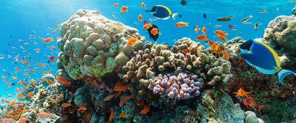

Sustainable Development Goal 14:
Life Below Water
Conserve and sustainably use the oceans, seas, and marine resources
for sustainable development.
The 14th Sustainable Development Goal (SDG) seeks to address
significant challenges facing our oceans and marine environments.
Ocean acidification, caused by the absorption of carbon dioxide from
the atmosphere, threatens marine life and ecosystems by altering pH
levels. Overfishing has depleted fish stocks and disrupted aquatic
food chains, endangering the livelihoods of coastal communities
reliant on fishing. Marine pollution, including plastics and chemical
contaminants, poses a grave threat to marine biodiversity and
ecosystem health, with far-reaching consequences for human health and
economies. Protecting marine biodiversity is crucial not only for
its intrinsic value but also for sustaining food security and economic
activities like tourism and coastal industries. By promoting
sustainable practices in fisheries and aquaculture, such as
implementing science-based quotas and monitoring systems, we can
ensure the long-term viability of marine resources. International
cooperation is essential to develop and enforce policies that reduce
marine pollution, improve waste management, and mitigate the impacts
of climate change on marine ecosystems. Ultimately, achieving SDG
14 requires a holistic approach that integrates conservation efforts
with sustainable development goals. It involves empowering coastal
communities with knowledge and resources to manage marine resources
responsibly while advocating for policies that prioritize the health
and resilience of oceans and seas worldwide.
Targets
By 2025, prevent and significantly reduce marine pollution of all
kinds, in particular from land-based activities, including marine
debris and nutrient pollution. This involves implementing improved
waste management practices and promoting sustainable consumption
habits globally.
By 2020, sustainably manage and protect marine and coastal ecosystems
to avoid significant adverse impacts, including by strengthening their
resilience, and take action for their restoration in order to achieve
healthy and productive oceans. This includes establishing marine
protected areas and restoring degraded habitats through collaborative
conservation efforts.
Minimize and address the impacts of ocean acidification, including
through enhanced scientific cooperation at all levels. Efforts involve
monitoring ocean pH levels, researching acidification's effects on
marine life, and implementing policies to reduce carbon emissions and
protect vulnerable ecosystems.
By 2020, effectively regulate harvesting and end overfishing, illegal,
unreported and unregulated fishing and destructive fishing practices
and implement science-based management plans, in order to restore fish
stocks in the shortest time feasible, at least to levels that can
produce maximum sustainable yield as determined by their biological
characteristics. This requires enforcing fishing quotas, monitoring
fishing activities, and promoting sustainable fishing practices
through international agreements and community engagement.
By 2020, conserve at least 10 per cent of coastal and marine areas,
consistent with national and international law and based on the best
available scientific information. This involves establishing marine
protected areas, promoting sustainable tourism practices, and engaging
local communities in marine conservation efforts.
By 2020, prohibit certain forms of fisheries subsidies which
contribute to overcapacity and overfishing, eliminate subsidies that
contribute to illegal, unreported and unregulated fishing and refrain
from introducing new such subsidies, recognizing that appropriate and
effective special and differential treatment for developing and least
developed countries should be an integral part of the World Trade
Organization fisheries subsidies negotiation. This involves phasing
out harmful subsidies, redirecting funds towards sustainable fishing
practices, and supporting developing countries in adopting responsible
fisheries management policies.